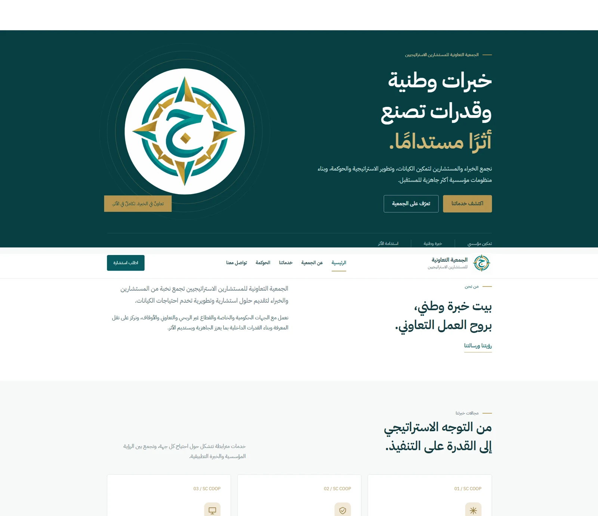

Digital accounts & projects
Requirements, execution plans, task coordination, reviews, approvals, and handover.
I manage digital projects.
And build solutions that work.
From understanding client needs and coordinating teams to developing websites and running IT services. I connect digital account delivery with hands-on implementation, from brief to handover.


I am Ebrahim Elfadaly, a Computer Science graduate from Misr University for Science and Technology, class of 2019. Since 2021, I have worked across digital business services at Riadh Al Afkar and, currently, Wida. My official title is Programmer, with responsibilities spanning client accounts, project coordination, and IT operations.
I turn client requirements into clear plans and coordinate writers, designers, and motion graphics teams through review, approval, and publishing. On the technical side, I develop and operate websites, manage domains, email and user accounts, and troubleshoot daily technology issues.
Requirements, execution plans, task coordination, reviews, approvals, and handover.
Briefing writers, designers, and motion graphics specialists; assigning tasks, guiding delivery, reviewing outputs, and coordinating client approvals.
Developing, deploying, and updating client websites and internal workflow platforms.
Domains, hosting, email and user administration, and troubleshooting devices and work accounts.
Internal platforms, client websites, and Android projects, with my contribution explained.

Designed and developed a platform bringing employee requests, services, approvals, subscriptions, and digital assets into one workspace, with role-based access and management reporting.
Designed, developed, deployed, and launched the website, with ongoing updates.
Designed, developed, deployed, and launched the website, with ongoing updates.
Designed, developed, deployed, and launched the website, with ongoing updates.
Designed, developed, deployed, and launched the website, with ongoing updates.
Designed, developed, deployed, and launched the website, with ongoing updates.
Built the website and managed account and content coordination through publishing.

Built the website, set up the domain and Google Workspace, and created social media accounts.
An e-commerce application from my Android development projects.
A project exploring weather data and API integration.
A trip-planning project using Java and Google Maps.
A Tic Tac Toe application from my Android training projects.
Graduation project exploring metro ticketing with QR codes through an Android application built in Java.
Android projects represent the academic and training side of my experience. Links open the public source repositories.
These examples describe my coordination, account management, and technical contributions while working at Wida or Riadh Al Afkar.
Developed the website, set up the domain and Google Workspace, and created the client’s social media accounts.
Explore the engagementAccount and content coordination across review, approval, translation, and publishing for different language channels.
Explore the engagementAn engagement combining account delivery, digital service setup, and translation and publishing coordination across four languages.
Explore the engagementManaged products and pricing on Zid and coordinated design, video, approvals, and social publishing.
Explore the engagementManaged products and pricing on Zid and coordinated design, video, approvals, and social publishing.
Explore the engagementManaged products and pricing on Zid and coordinated design, video, approvals, and social publishing.
Explore the engagementDeveloped the client website and coordinated content from preparation through publishing across social platforms.
Explore the engagementManaged the client account, followed work requirements, and coordinated delivery with the team.
Explore the engagementManaged the client account, followed work requirements, and coordinated delivery with the team.
Explore the engagementManaged the client account, followed work requirements, and coordinated delivery with the team.
Explore the engagementManaged the client account, followed work requirements, and coordinated delivery with the team.
Explore the engagementPHP · .NET · cPanel · DNS
Google Workspace · Microsoft 365
Git · GitHub · AI-assisted development
Buffer · Hootsuite · Meta Ads Manager
Zid · Social media publishing
Creative production coordination
Java · Kotlin · Android SDK
Firebase · REST APIs · JSON
MVVM · Google Maps · Git

In appreciation of my efforts and contributions across the company’s work.
Misr University for Science and Technology
Graduation project: Metro ticketing Android application using QR codes and Java.
Information Technology Institute (ITI)
Java · Kotlin · Firebase · REST APIs · Git
Two focused CVs, each available as an Arabic or English PDF.
For client account management, project coordination, content, and digital operations roles.
For web development and administration, hosting, support, and IT operations roles.
For opportunities in digital projects, web development, and IT operations.